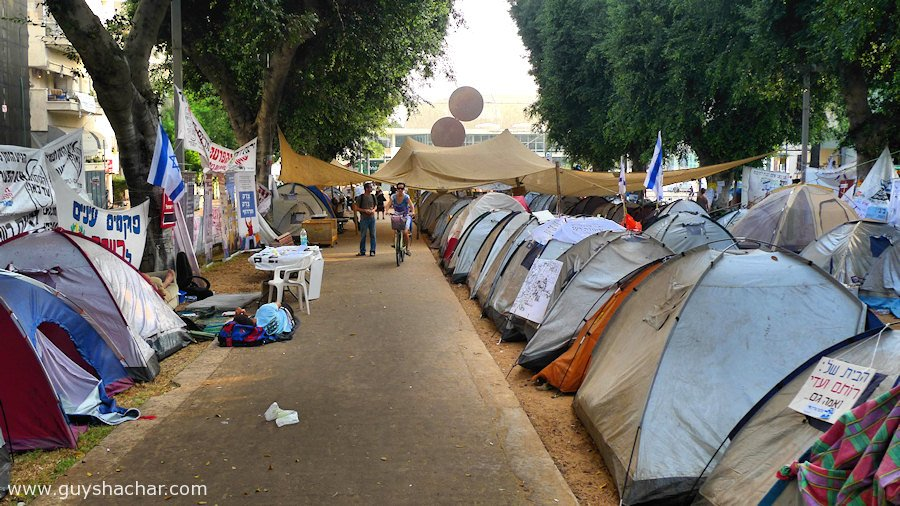

TLV TeleTent
The TeleTent project was initiated to allow people who live far away to be present in the middle of Rothschild Boulevard and take part in the social justice protest. The distant person becomes present by conducting a bi-directional video call to the tent. This person can see and hear the street while the people in the street see the person as if he were inside the tent, protesting from it.
 In July 2011 a group of protesters put up tents in Rothschild Boulevard, Tel Aviv, to protest the high cost of living in Israel. In a short time, this protest became the biggest protest in Israel’s history. The tent became a symbol of the high cost of housing and living expenses in Israel.
I needed this tent to be ready immediately. I integrated various existing technologies such as: Skype and a projector, and with the cooperation of good friends we set up this project. I installed the projector inside the tent and projected the video call onto the tent's window. We had people calling us from all over the world including the US, London, and India, supporting the protest as well as having discussions with passersby.